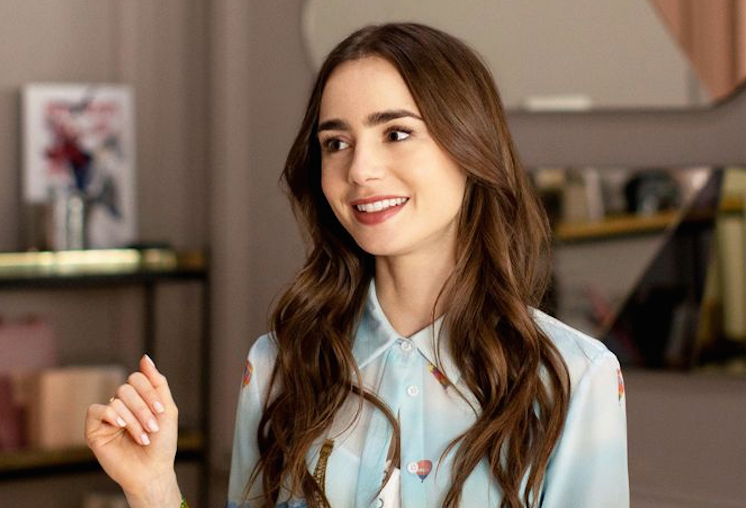

Lily Jane Collins (born 18 March 1989) is a British-American actress. The daughter of English musician Phil Collins and American actress Jill Tavelman, she was born in Surrey and moved to Los Angeles as a child.
Collin's debut role was at the age of two in the BBC series Growing Pains. She was named International Model of the Year by Spain's Glamour magazine after being selected by Chanel to wear one of their dresses at the Hôtel de Crillon in 2007. She had leading roles in films such as the sci-fi action-horror film Priest (2011), the psychological action-thriller Abduction (2011), the fantasy Mirror Mirror (2012), the urban fantasy The Mortal Instruments: City of Bones (2013), and also starred in the independent romantic comedies Stuck in Love (2012), The English Teacher (2013), and Love, Rosie (2014).

Collins won the New Hollywood Film Award and was nominated for a Golden Globe Award for Best Actress – Motion Picture Musical or Comedy for her role as Marla Mabrey in Rules Don't Apply (2016). She received acclaim for her portrayal of a young adult with anorexia in the Netflix drama To the Bone (2017). She starred as Fantine in the BBC miniseries adaptation of Les Misérables (2018–2019), and recently had roles in two biographical films; she starred as Liz Kendall in the Netflix drama Extremely Wicked, Shockingly Evil and Vile, and as J.R.R. Tolkien's wife Edith in Tolkien. Since 2020, she appeared as Rita Alexander in David Fincher's Mank and currently stars as Emily Cooper in the Netflix series Emily in Paris,[1] for which she received a nomination for a Golden Globe Award for Best Actress – Television Series Musical or Comedy.
Early life
Lily Jane Collins was born on 18 March 1989 in Guildford, Surrey,[3] the daughter of English musician Phil Collins and his second wife, Jill Tavelman, an American who is the former president of the Beverly Hills Women's Club.[4] Her maternal grandfather was a Canadian Jewish immigrant who for many years owned a men's clothing store in Beverly Hills, California.[5][6][7][8] After her parents' divorce in 1996, when she was seven, Collins moved to Los Angeles with her mother.[9] She graduated from Harvard-Westlake School and attended the University of Southern California, majoring in broadcast journalism.[10] She was presented as a debutante at the Bal des débutantes in Paris in 2007.[11] Collins is the half-sister of musician Simon Collins and actress Joely Collins from her father's first marriage, and she has two other younger half-brothers from her father's third marriage. As a teenager, Collins suffered from an eating disorder that she later revealed in her book, Unfiltered: No Shame, No Regrets, Just Me.[12]
Career
2007–2012: Early work and breakthrough
Collins began acting at the age of two in the BBC series Growing Pains.[13] As a teenager, Collins wrote a column, "NY Confidential", for the British magazine Elle Girl.[10] She has also written for Seventeen,[14] Teen Vogue,[15] and the Los Angeles Times.[16] She was selected by Chanel to wear one of their gowns at the 2007 Bal des débutantes at the Hôtel de Crillon in Paris, which was featured on season three of the reality television series The Hills.[17][18] She was picked by Spain's Glamour magazine in 2008 as its International Model of the Year,[19] and appeared on the magazine's cover in August 2009. Collins covered the 2008 US presidential election as a host on the Nickelodeon series Kids Pick the President.[16][20] She won a 2008 Young Hollywood Award for Newest Red Carpet Correspondent.[21]
In 2009, Collins appeared in two episodes of the teen drama series 90210, including the first season's finale. Collins was one of 20 women named by Maxim magazine as one of the Hottest Daughters of Rock Stars in 2009.[22] In 2009, Collins co-starred in the film The Blind Side as Collins Tuohy, the daughter of Sandra Bullock's character Leigh Anne Tuohy. In 2011, she played the warrior priest's daughter Lucy in the thriller Priest, opposite Paul Bettany.[23][24] MTV Networks' NextMovie.com named her one of the Breakout Stars to Watch for in 2011.[25] She co-starred in the 2011 action film Abduction with Taylor Lautner.[26]
2013–2017: Critical recognition and widespread success
Collins was initially cast as the lead in the 2013 remake of Evil Dead, but dropped out due to a scheduling issue.[29][30] She then starred as Clary Fray in The Mortal Instruments: City of Bones, a film adaptation of the first book in The New York Times best-selling The Mortal Instruments novels, written by Cassandra Clare.[31] In October 2013, Collins appeared in the music video for "City of Angels" by Thirty Seconds to Mars.[32] In 2014, Collins starred as Rosie Dunne in the film adaptation of Love, Rosie, alongside Sam Claflin, written by Cecelia Ahern.[33]
Collins then had a leading role as aspiring actress Marla Mabrey, alongside Alden Ehrenreich, in the romantic comedy-drama Rules Don't Apply (2016), from filmmaker Warren Beatty, who also starred as billionaire Howard Hughes.[34] When the film was released in November, it received mixed reviews and only grossed $3.9 million against its $25 million budget. Despite this, for her role as Marla Mabrey, Collins received her first Golden Globe nomination for Best Actress in a Comedy or Musical at the 74th Golden Globe Awards. In 2016, Collins was part of a pilot produced for The Last Tycoon, loosely based on F. Scott Fitzgerald's last book The Last Tycoon. She played Cecelia Brady, daughter of Pat Brady, who was played by Kelsey Grammer. Amazon picked up the pilot to series on 27 July 2016 but later cancelled their plans for a second season in September in 2017.[35]
In March 2016, Collins joined the anorexia drama film To the Bone in the lead role, written and directed by Marti Noxon.[36] The film follows Ellen or Eli, a 20-year-old woman suffering from anorexia nervosa. It premiered in competition at the Sundance Film Festival on 22 January 2017, as a contender in the U.S. Dramatic Competition. It was released worldwide on Netflix on 14 July 2017. When the film was first released on Netflix there was some controversy about whether the film would be triggering for those with eating disorders.[37] This controversy was also influenced by another Netflix original show 13 Reasons Why after it was accused of glamouring suicide.[38][39] Despite the taboo topic of the movie, Collins' depiction of Ellen was described as "exemplary work from Lily Collins in the central role".[40] Justin Chang of Los Angeles Times wrote that "In a different film, Ellen's sharp tongue might have made her an insufferable fount of wisecracking negativity, but Collins' performance is subtler than that, and the script gives her ample opportunity to reveal the character's more complicated, vulnerable edges."[41][42][43]